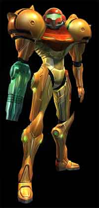
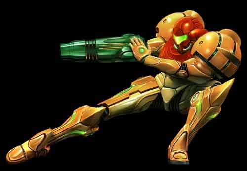

YOU ARE IN: METROID PRIME: CHARACTERS AND ENEMIES
Metroid Prime takes place on a deserted planet, only infested with grotesque creatures, all of which have a plan on eating you. During the process of creating any game, some idea of what the characters look like must be made. This is usually in the form of concept art. Here is a small collection of characters and enemies from the game designers themselves:
Click the images to load larger versions (press back on the browser to return).
SAMUS ARAN
This is the main character in the game, and whom the player takes control of. Much to the surprise of many gamers during the previous outings of Metroid games, Samus Aran is a female. This was a surprise because most action heroes before then had been male, i.e. Spiderman, Superman, Daredevil etc.
Unfortunately, the character is seen in the game only when switching from morph-ball to normal First Person view, but as these character profiles prove, the character is well detailed.
CHOZO RUINS CREATURES
Some of the first levels include creatures like this. As you walk forward, they emerge from the sandy ground and attack. They are beetle like creatures which have a mean charge. They have a large shiny shield on what seems like their head, and apparently don't have eyes. Apart from them being almost entirely covered with hard skin, their red tail seems to be their only weak spot - so aim all your fire power there!
PHENDRANA DRIFTS CREATURES
During the Phendrana Drifts area of the game, there are these little beasties lurking behind many corners (Sheegoths). They are larger and can shoot ice beams from their mouths. They have what looks like shields on their backs, but are actually their weakness. After a charged up power beam is fired, their shield breaks up and reveals their flesh - an easy target. Watch out for their charge attack!
BOSS CREATURES
This might just seem like an ordinary plant - part of the environment from afar, but by stepping nearer, it becomes alive and starts moving around trying to attack! Creatures like these add to the detail element of the game and enhances the exploration impact of the game. There are many more creatures on the planet of Tallon IV, and the information about them can be downloaded via the scanning visor.
Actually, these pictures are quite late versions of the concept art, there are more concept art pictures available on the game (you have to earn them though!)
{kind=link}
{kind=link}
{kind=link}
{kind=link}
{kind=link}
{kind=link}